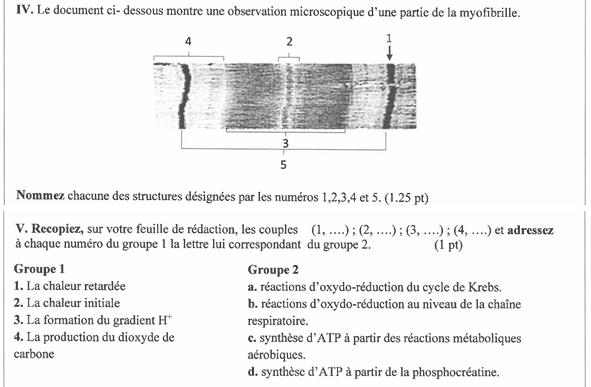

Vérification de votre accès…
BAC 2021 — Session normale
Répondez sur votre feuille avant de consulter les corrections. Comparez ensuite vos réponses avec les éléments attendus et le barème.
← Retour aux exercices de l’Unité II. Définitions (1 point)
Définissez les notions suivantes :
- Sphère pédonculée.
- Complexe actomyosine.
Éléments de correction
Sphère pédonculée : structure protéique de la membrane interne mitochondriale qui catalyse la production d’ATP par phosphorylation de l’ADP.
Complexe actomyosine : complexe formé par la liaison de l’actine et de la myosine lors de la contraction musculaire.
Barème : 0,5 point par définition correcte.
II. Formation de l’acétyl-CoA (0,75 point)
Recopiez et complétez la réaction suivante :
Éléments de correction
Les éléments attendus sont l’acide pyruvique, le NADH + H⁺ et le dioxyde de carbone.
Barème : 3 × 0,25 point.
III. Questions à choix multiple (2 points)
Pour chaque item numéroté de 1 à 4, une seule proposition est correcte. Écrivez les couples : (1 ; …), (2 ; …), (3 ; …), (4 ; …).
1. La membrane externe des mitochondries est :
- riche en protéines de la chaîne respiratoire ;
- semblable à la membrane plasmique ;
- repliée sous forme de crêtes ;
- riche en ATP-synthase.
2. L’oxydation respiratoire d’une molécule d’acide pyruvique fournit :
- 2 ATP ;
- 12 ATP ;
- 15 ATP ;
- 36 ATP.
3. Dans une cellule de muscle squelettique striée, les ions du calcium :
- se fixent sur les têtes de myosine lors de la contraction ;
- permettent la liaison des filaments d’actine entre eux ;
- permettent la liaison des filaments de myosine entre eux ;
- sont stockés dans le réticulum sarcoplasmique à la fin de la contraction.
4. La respiration cellulaire se déroule selon la succession des étapes suivantes :
- Glycolyse → cycle de Krebs → formation de l’acétyl-CoA → phosphorylation oxydative ;
- Glycolyse → formation de l’acétyl-CoA → cycle de Krebs → phosphorylation oxydative ;
- Glycolyse → formation de l’acétyl-CoA → phosphorylation oxydative → cycle de Krebs ;
- Glycolyse → cycle de Krebs → phosphorylation oxydative → formation de l’acétyl-CoA.
Éléments de correction
(1 ; b) — (2 ; c) — (3 ; d) — (4 ; b)
Barème : 0,5 point par réponse correcte.
IV. Observation d’une myofibrille (1,25 point)
Le document ci-dessous montre une observation microscopique d’une partie de la myofibrille.

Nommez chacune des structures désignées par les numéros 1, 2, 3, 4 et 5.
Éléments de correction
- Strie Z.
- Zone H.
- Bande sombre (A).
- Bande claire (I).
- Sarcomère.
Barème : 0,25 point par structure correcte.
V. Associations (1 point)
Associez à chaque numéro du groupe 1 la lettre correspondante du groupe 2. Écrivez les couples : (1 ; …), (2 ; …), (3 ; …), (4 ; …).
| Groupe 1 | Groupe 2 |
|---|---|
| 1. La chaleur retardée. | a. Réactions d’oxydoréduction du cycle de Krebs. |
| 2. La chaleur initiale. | b. Réactions d’oxydoréduction au niveau de la chaîne respiratoire. |
| 3. La formation du gradient H⁺. | c. Synthèse d’ATP à partir des réactions métaboliques aérobiques. |
| 4. La production du dioxyde de carbone. | d. Synthèse d’ATP à partir de la phosphocréatine. |
Éléments de correction
(1 ; c) — (2 ; d) — (3 ; b) — (4 ; a)
Barème : 0,25 point par association correcte.